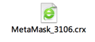
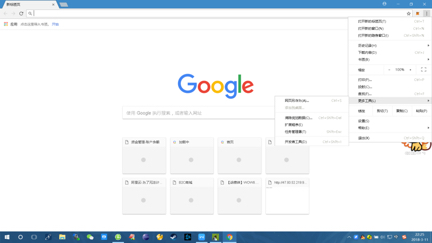
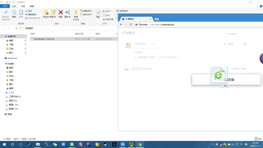
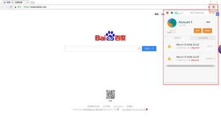

1.安装谷歌浏览器
window版本下载地址： http://sw.bos.baidu.com/sw-search-sp/software/699c20ec5a22e/ChromeStandalone_65.0.3325.146_Setup.exe
MAC 版本下载地址： http://sw.bos.baidu.com/sw-search-sp/software/b77ec09507e2a/googlechrome_mac_63.0.3239.84.dmg
2.安装 MetaMask插件
2.1.首先下载文档中的MetaMask插件文件，右键点击并选择“保存到文件”
2.2.然后打开谷歌浏览器，找到并点击，选择“更多工具”-“扩展程序”
2.3.打开文件夹，将上面下载的插件文件拖拽至“扩展程序”页面
2.4.松开鼠标稍等片刻即完成，此时右上角会出现MetaMask的图标
